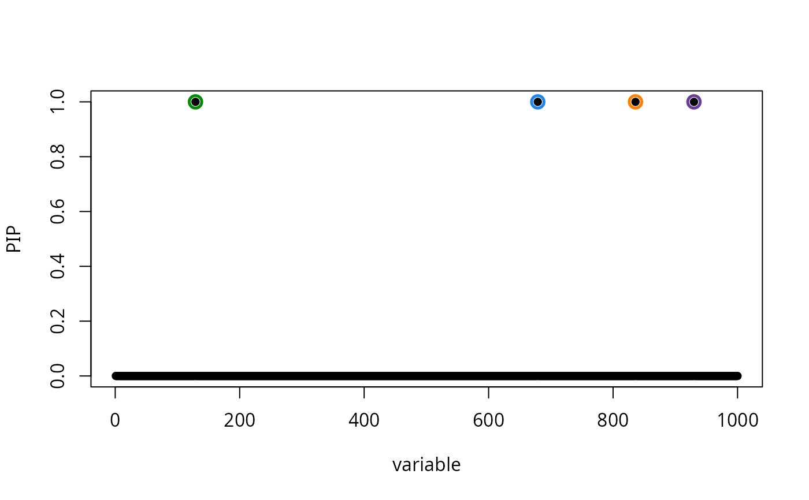
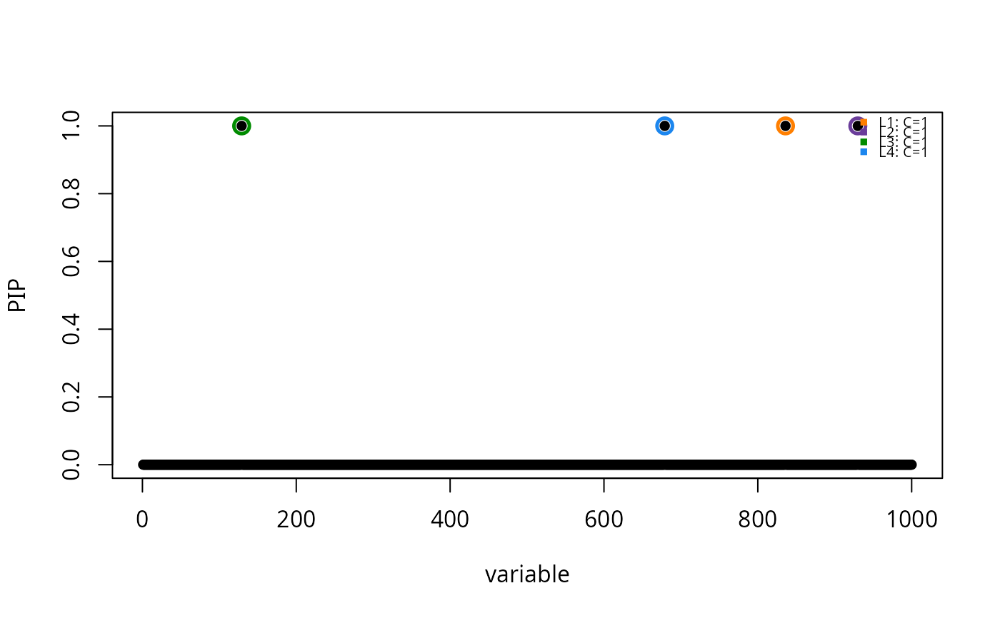
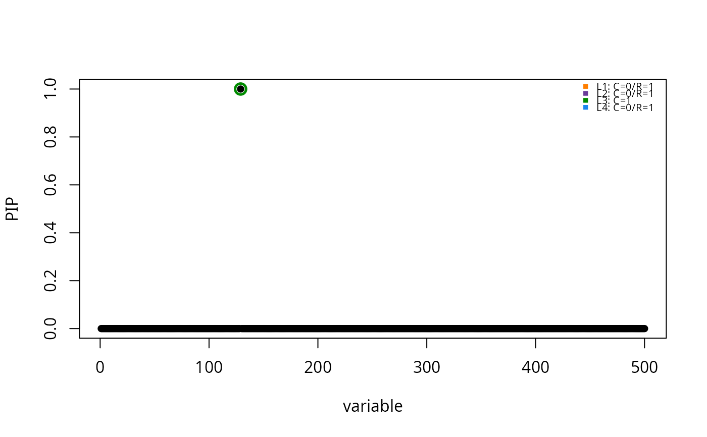
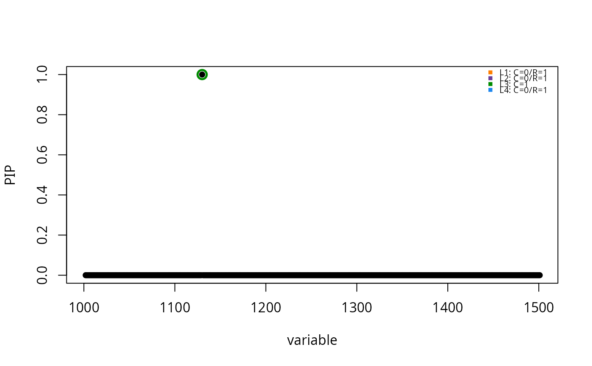
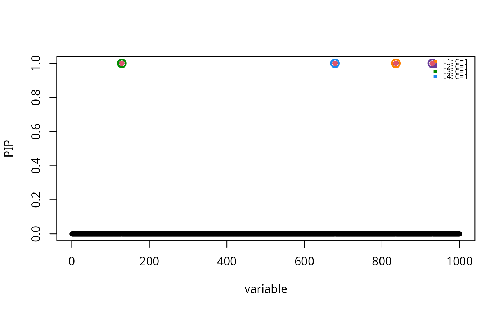

susie_plot produces a per-variable summary of
the SuSiE credible sets. susie_plot_iteration produces a
diagnostic plot for the susie model fitting. For
susie_plot_iteration, several plots will be created if
track_fit = TRUE when calling susie.
susie_plot( model, y, add_bar = FALSE, pos = NULL, b = NULL, max_cs = 400, add_legend = NULL, ... ) susie_plot_iteration(model, L, file_prefix, pos = NULL)
| model | A SuSiE fit, typically an output from
|
|---|---|
| y | A string indicating what to plot: either |
| add_bar | If |
| pos | Indices of variables to plot. If |
| b | For simulated data, set |
| max_cs | The largest credible set to display, either based on
purity (set |
| add_legend | If |
| ... | Additional arguments passed to
|
| L | An integer specifying the number of credible sets to plot. |
| file_prefix | Prefix to path of output plot file. If not
specified, the plot, or plots, will be saved to a temporary
directory generated using |
Invisibly returns NULL.
set.seed(1) n = 1000 p = 1000 beta = rep(0,p) beta[sample(1:1000,4)] = 1 X = matrix(rnorm(n*p),nrow = n,ncol = p) X = scale(X,center = TRUE,scale = TRUE) y = drop(X %*% beta + rnorm(n)) res = susie(X,y,L = 10) susie_plot(res,"PIP")susie_plot(res,"PIP",add_bar = TRUE)susie_plot(res,"PIP",add_legend = TRUE)susie_plot(res,"PIP", pos=1:500, add_legend = TRUE)# Plot selected regions with adjusted x-axis position label res$genomic_position = 1000 + (1:length(res$pip)) susie_plot(res,"PIP",add_legend = TRUE, pos = list(attr = "genomic_position",start = 1000,end = 1500))# True effects are shown in red. susie_plot(res,"PIP",b = beta,add_legend = TRUE)set.seed(1) n = 1000 p = 1000 beta = rep(0,p) beta[sample(1:1000,4)] = 1 X = matrix(rnorm(n*p),nrow = n,ncol = p) X = scale(X,center = TRUE,scale = TRUE) y = drop(X %*% beta + rnorm(n)) res = susie(X,y,L = 10) susie_plot_iteration(res, L=10)#>